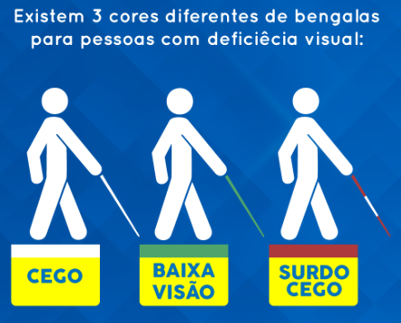

A deficiência visual ocorre quando há a perda definitiva, total ou parcial, da visão. Ou seja, nos casos em que não
existe a possibilidade de correção da capacidade visual plena, seja com óculos, lentes de contato ou cirurgia.
A deficiência visual é uma condição irreversível que causa limitação funcional de um ou de ambos os olhos ou outro
componente do sistema da visão. Sendo que, dependendo do grau de deficiência visual, atividades comuns do dia a dia,
como dirigir e assistir televisão, por exemplo, podem ser comprometidas ou impraticáveis.
Organização Mundial da Saúde (OMS) e o CDC, órgão do governo norte americano correspondente à Anvisa, classificam os
graus de deficiência visual e cegueira baseados na tabela de Snellen do seguinte modo:
. 20/30 a 20/60: perda de visão leve, ou quase normal;
. 20/70 a 20/160: deficiência visual moderada;
. 20/200 a 20/400: deficiência visual severa;
. 20/500 a 20/1000 deficiência visual profunda;
. Inferior a 20/1000 deficiência visual quase total, próximo da cegueira;
. Sem qualquer percepção de luz: cegueira total.
FIQUE ATENTO!

Clique aqui!
A lei estabelece as seguintes cores das bengalas: branca, para pessoas com ausência total de visão; verde, para pessoas
com comprometimento significativo da visão, mas não total; e vermelha e branca, para pessoas surdocegas.
Inicio da Tempestade! Mensagem de esperança para todos que enfrentam dificuldades!
Clique aqui!
Conheça História de Aroldo, ela nos ensina que, com força de vontade e determinação, podemos superá qualquer obstáculo.
E enxergar a vida com outros olhos.
Boné Sensorial!
Alunos do Curso Técnico em Informática da rede Educacional Senac-SBC,
desenvolvem Boné Sensorial 360 graus para deficientes visuais! Saiba mais.
Perguntas e duvidas sobre o Inovador Boné Sensorial.
FAQ.